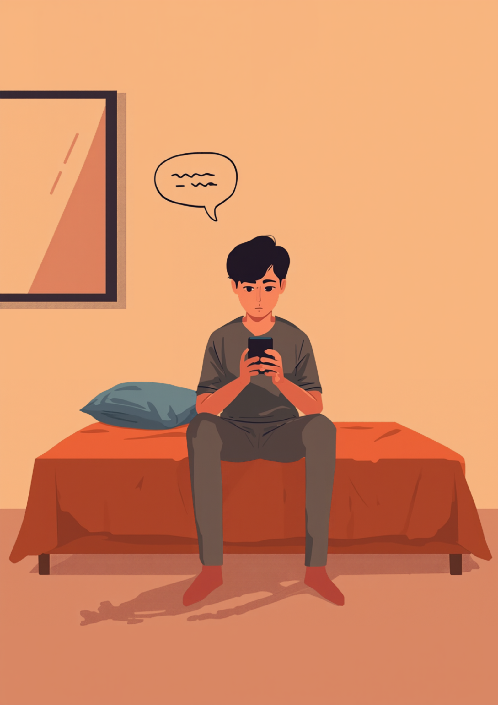
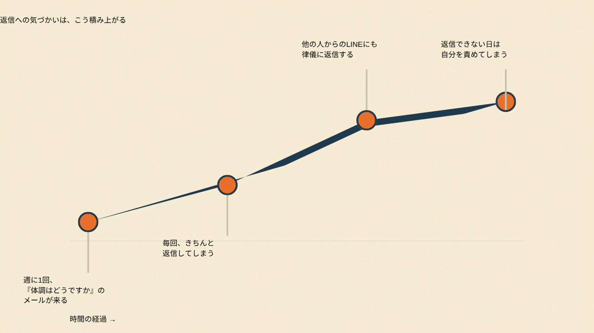
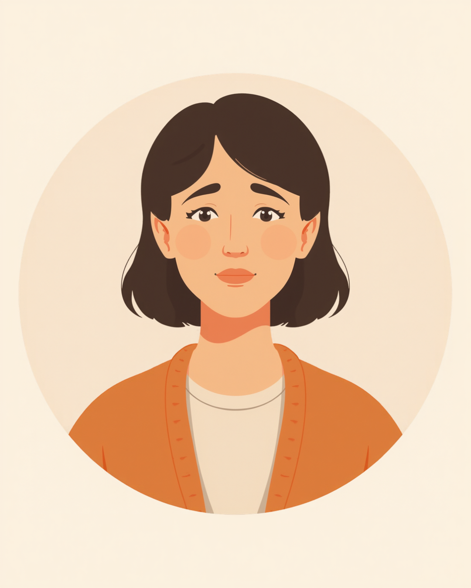
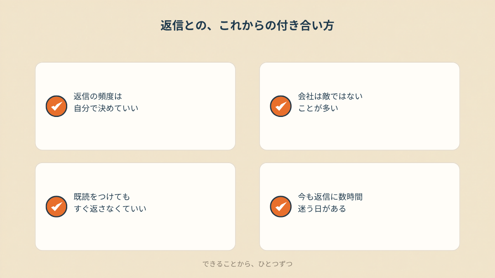

週に一度、「体調はどうですか」が届く
先月末から1ヶ月の休職に入った。理由は職場だった。だから休職中は、なるべく仕事のことを考えず、自分と向き合う時間にしようと決めていた。なのに、休職の連絡を入れたその日から、週に1回のペースで会社から連絡が来るようになった。「体調はどうですか」「これからの手続きについて聞きたいので連絡ください」「なにか職場に理由があるなら改善したいので、一度お話ししたい」。文面はいつも丁寧で、責めるような言葉は一つもない。
それでも、メールが来るたびに律儀に返信していた。事務の人からのLINEにも、もちろん返信していた。傷病手当金の申請書も、職場に置いてあった荷物も、向こうはちゃんと届けてくれた。借り上げ社宅の制度も使わせてもらっている。だから「迷惑をかけているのはこちらの方だ」という感覚が、いつも頭の片隅にあった。返信しないという選択肢が、最初からなかったように思う。
「休職して最初の頃は、正直、連絡が来るだけでちょっと嬉しかったんです。見捨てられてないんだなって。でも3週目くらいから、通知に会社の名前が出るだけで胃のあたりがぎゅっとなるようになりました。内容はいつも同じで、体調どうですかって。悪い人たちじゃないのは分かってるので、余計に『こんなことでしんどいと思う自分がおかしいのかな』って考えちゃって、そこがいちばん辛かったです。」
既読をつけてから、動けなくなる数時間
メールを開いて、既読の状態にする。そこまではすぐにできる。問題はそのあとだった。「ありがとうございます、体調は少しずつ落ち着いてきています」と打っては消し、「まだあまり良くありません」と打っては、それはそれで心配をかけて次の連絡が増えそうな気がして消す。結局、当たり障りのない一言に落ち着くまでに、既読をつけてから数時間かかることが何度もあった。
返信が遅れた日は、それはそれで気になった。「昨日も体調はいかがですかとメールが来たけど、まだ返信できていない」。そう思うと、返信していない時間そのものが新しい心配の種になる。休むために休職しているはずなのに、返信するかしないかで一日の気分が左右される。この矛盾に気づいたのは、実はだいぶあとになってからだった。

もらった連絡そのものは、決して悪いものではない。それは分かっている。それでも「返信しなきゃ」という気持ちが、休むために空けたはずの時間を静かに削っていった。事務の人からの何気ないLINEにまで同じ調子で返信していたことに気づいたときは、自分でも少し驚いた。
「営業やってて、休職初日から『あの案件どうなってる?』みたいな連絡がひっきりなしに来たことがあります。引き継ぎのマニュアルは一応作ったんですけど、属人的な仕事だったから結局頼られちゃって。休んでる感覚がまったくなくて、3ヶ月くらいそれが続きました。今思うと、あの時期の方が働いてた頃より疲れてた気がします。」
「甘えすぎですよね」と言われた日
ある日、休職中の職場との連絡について、思い切って匿名の相談掲示板に書き込んでみたことがある。「これは私が社会不適合者すぎるからでしょうか。甘えすぎですよね」と、自分でも情けなくなるような一文を添えて。返ってきた反応のひとつは、こうだった。「はい、申し上げるまでもありません。長文の自己語りをなさる余裕があれば、すぐさま会社からのメールに返信ください」。
正直、その一文を読んだ瞬間は体温が下がるような感覚があった。でも、しばらくして浮かんできたのは、意外にも「こんな人が上司じゃなくてよかった」という言葉だった。優しさに見える連絡と、それに応え続ける義務感は、別のものだと気づいたのは、たぶんこのあたりからだったと思う。

返信のペースを、自分で決めていいと知るまで
掲示板への書き込みには、突き放すような反応だけでなく、「連絡を減らす、まとめて伝えるように言えないですかね」という声も返ってきていた。会社側の配慮と、回復に必要な環境が噛み合っていないだけで、どちらが悪いという話ではない。そう言われて、初めて返信の頻度や方法を自分から相談していいのだと知った。
試してみたこと
- 「体調確認のご連絡は、週1回程度にまとめていただけると助かります」と一言添える
- 電話や面談は、復職の判断が近づいてから改めてお願いする
- 窓口を人事や特定の担当者ひとりにしてもらう
- 返信までに数日いただく場合がある旨を、あらかじめ伝えておく
今も、既読をつけてから返信までに数時間かかる日はある。それは正直、完全には抜けきれていない。ただ以前のように、返信していない時間そのものを責める感覚は減った気がする。休職は治療のための期間で、即レスを前提にした仕組みではない。分かってはいても、体に染みつくまでには、もう少し時間がかかりそうだ。
よくある質問

関連記事
この記事に、聞いてみたいことはありますか？
「自分の場合はどうなんだろう」と思ったことを、気軽に書いてみてください。いただいた質問は個別にお返事したうえで、匿名で記事にすることがあります。
mimemime代表。就労支援の現場経験をもとに、障がいのある方の働く不安に寄り添う記事を執筆。